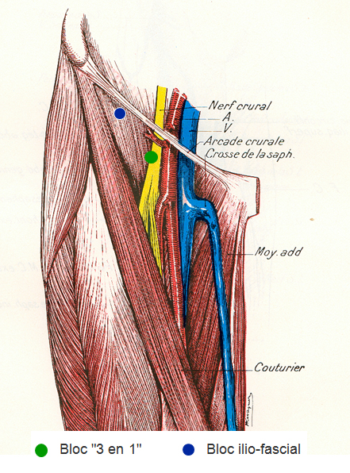

Bienvenue Sur Medical Education
Bloc iliofascial de l'adulte
AdulteSpécialité : traumatologie /
Points importants
- Formation initiale et maintien de compétence
- Maîtrise de la technique
- Respecter les indications, contre-indications et précautions d’emploi
- Patient monitoré et perfusé, matériel de réanimation prêt à l’emploi
-
Indications :
- fracture de la diaphyse fémorale
- plaies délabrantes de la cuisse et du genou
- fracture du col fémoral
- Examen neurologique préalable consigné par écrit
- Respect des repères et de la technique
- Kit ALR spécifiques, aiguilles à biseau court
- AL recommandé : xylocaïne 1% adrénalinée
- Dose test et tests d’aspiration répétés
- Respect des doses maximales
- Savoir détecter précocement les signes d’intoxication et savoir y faire face
- Immobilisation systématique du membre
- Surveillance adaptée
- Traçabilité dans le dossier, transmission aux équipes relais
Indications
- Fracture de la diaphyse fémorale
- Plaies délabrantes de la cuisse et du genou
- Fracture du col fémoral
Contre-indications
CONTRE-INDICATIONS ABSOLUES
- Infection locale
- Brûlure ou plaie située situées dans la zone du point de ponction
- Troubles majeurs de l’hémostase
- Porphyrie
- Allergie aux anesthésiques locaux
- Refus du patient
CONTRE-INDICATIONS RELATIVES
-
Aux solutions adrénalinées :
- cardiopathies ischémiques mal compensées et thyrotoxicose
La présence de signes neurologiques de lésions nerveuses ne constitue pas une contre-indication formelle à la technique mais peut inciter à utiliser d’autres techniques analgésiques (risque médico-légal)
Présentation du matériel
- Prévoir un Kit spécifique pour l’ALR
- Matériel spécifique pour l’hygiène du geste
- Aiguille à biseau court
- Seringue de 20 mL ou plus, trocard
- Xylocaïne 1% adrénalinée (à conserver au réfrégirateur)
- Produit alternatif : Xylocaïne non adrénalinée
- Matériel de monitorage : scope, PNI, SpO2
- Matériel de réanimation prêt à l’emploi
Description de la technique
fichier_840
fichier_840
- - -
Bloc iliofacial
- Patient en décubitus dorsal, informé de la technique
- Examen neurologique du membre préalable systématique et consigné par écrit
- Monitorage en place
- Voie veineuse périphérique de bon calibre
- Penser au MEOPA pour l’installation du patient
- Membre légèrement en abduction, rotation externe
- Asepsie rigoureuse
-
Repères :
-
 fichier_832
Bloc du nerf fémoral 1
fichier_832
Bloc du nerf fémoral 1
-  fichier_833 Bloc du nerf fémoral 2
- arcade crurale : entre l’épine iliaque antéro-supérieure et l’épine du pubis
- jonction 1/3 externe – 2/3 interne à 2 cm en-dessous de l’arcade crurale
- en dedans du bord interne des muscles de la face antérieure de la cuisse
-
- Aiguille introduite à 45° par rapport à la face antérieure de cuisse, en direction de l’arcade crurale
- L’aiguille franchit la peau puis les fascia lata (1er ressaut) et iliaca (2e ressaut) pour arriver dans l’espace iliofascial
- Test d’aspiration
- Dose test de 3 mL de xylocaïne 1% adrénalinée
- Vérifier la FC
- Injection lente et fractionnée, facile et indolore, tests d’aspirations répétés
- Dose recommandée = 0,4 mL/kg de xlyocaïne 1% adrénalinée
- Garder le contact verbal permanent
- Rechercher les signes cliniques d’intoxication aux anesthésiques locaux (goût métallique dans la bouche, sensation de malaise, nausées, acouphènes, …)
- Dose maximale : 500 mg de xylocaïne adrénalinée
- Dose maximale : 300 mg de Xylocaïne non-adrénalinée
- Immobilisation systématique du membre
- Durée d’action de 90 min environ
- Traçabilité dans le dossier
Précautions d’emploi
- Monitorage systématique
- Voie veineuse périphérique en place
- Immobilisation du membre systématique (évite els lésions neurologiques secondaire liées à la mobilisation intempestive du foyer de fracture)
-
Circonstances imposant l’arrêt immédiat du geste :
- apparition d’un reflux sanguin
- apparition d’une douleur aiguë fulgurante dans le territoire du nerf fémoral (injection intraneuronale)
- apparition de signes de neuro-toxicité : Apparition de manifestations cardiaques : pâleur, tachycardie, troubles du rythme, hypotension ou hypertension artérielle, arrêt circulatoire
- Savoir attendre le délai d’action de 5 à 20 min avant de parler d’échec
- Garder le contact verbal ; éviter la sédation associée
- Pas d’escalade de sédation vigile en cas d’échec ; changer de technique
- En cas d’analgésie par morphine IV première, faire attention à la levée des effets secondaires éventuels des morphiniques : importance de la surveillance
Pièges éventuels
- Taux de succès de 88% pour le nerf fémoral, de 90% pour le nerf cutané latéral et de 38% pour le nerf obturateur
- Bloc sensitif isolé ; ne pas rechercher un bloc moteur
Complications
NEUROLOGIQUES
- Lésion du nerf par ponction directe ou injection intraneuronale
- Lésion neurologique secondaire par mobilisation du foyer de fracture
SYSTEMIQUES
- Intoxication aux AL
Signes d’intoxications neurologiques
- Vertiges
- Nausées
- Goût métallique dans la bouche
- Malaise général avec angoisse
- Acouphènes
- Dysesthésies
- Céphalées
- Logorrhée
- Empâtement de la parole
- Convulsions
- Etc.
Signes d’intoxications cardiaques
- Pâleur
- Tachycardie,
- Arythmies, TV, FV
- Bradycardies
- HypoTA ou HTA
- Arrêt circulatoire
AUTRES
- Septique
- Allergie
- Méthémoglobinémie exceptionelle
ECHEC
Surveillance
- Scores de douleur répétés : EVA ou EN
- Surveillance de l’état neurologique, hémodynamique et respiratoire
- Surveillance du bloc sensitif
Auteur(s) : Agnès RICARD-HIBON